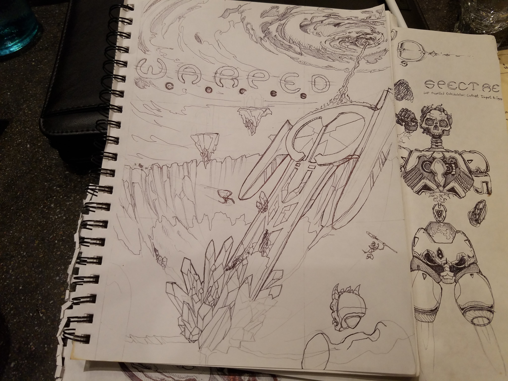

What is EverRed Games
EverRed Games is a worker owned indie game studio dedicated to making great games and a better world. We believe that people make better games when they have control over how they work and what they work on. Every member of EverRed Games has an equal say on what happens within the company, we are accountable to ourselves and each other, not to bosses and owners.
We also believe that there’s more to life than getting rich. Once business costs and salaries have been paid any further profits will be donated to charities. There are so many problems facing our world right now, and we want to be some small part of the solution.
What Do We Do
Our core goal at EverRed is to make great games our players will love. Currently we very interested in VR, the immersive realities and meaningful player interactions it can create.
Warped Cores
Warped Cores is a fast-paced action game that will see you teleporting around breathtaking arenas as you attempt to destroy your opponents. In the far future humanity has spread out among the stars and split into different factions, all based around their beliefs on what happens to the soul when a person teleports. In Arena mode you will take control of a Spectre, a robotic body designed for teleportation based combat, and represent one of the factions in a fight against other Spectres. We are also going to be working on an episodic story mode, where you will be able to play solo or in co-op with your friends.
Who are We
EverRed Games is made up of a small team of passionate game developers with a variety of skill sets. We hope as more people hear about us that the team will continue to grow.
Daniel McGuinness
Daniel is the lead developer, responsible for programming and implementing all the content into the game. He also makes sure all the wheels keep turning here at EverRed. Besides testing new gameplay ideas he enjoys getting out in nature and cuddling with his cat Naomi.
Jason Schneider
Jason is the art director and concept artist, he makes sure the games look as cool as possible. Pretty much all the art you see on this site and in our games was designed by him.
Shane Streeter
Shane gets to turn the concept art into reality, 3D modelling, texturing, and just generally making things look good.
Where to Follow Us
You can follow us at any of our social media links below, but if you really want to be a part of the journey as we develop new games you should join our Discord community.
If you need to talk to us privately about business inquiries, job opportunities, or anything else, you can email us at everredgames@gmail.com